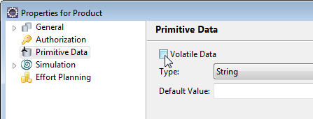
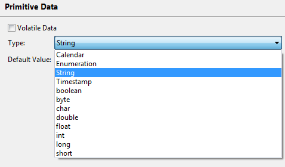
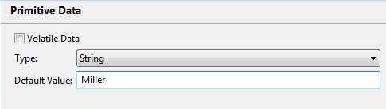
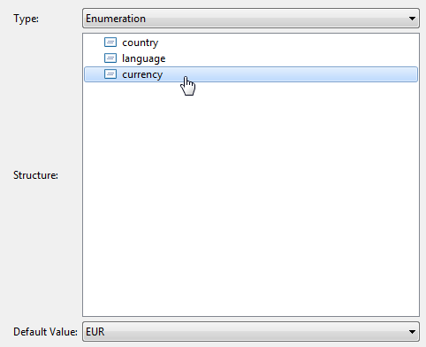
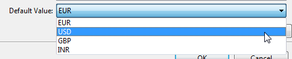
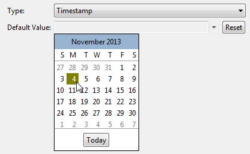
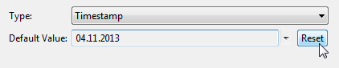

Primitive data are characterized by having a simple storage in the audit trail, allowing highly efficient retrieval and usage in queries. Their values are directly stored in the indexed fields string_value or number_value of the data_value table. To specify a primitive data, create a data as described in chapter Specifying Data and set properties in the data properties dialog. To set primitive data specific properties, click the Primitive Type entry on the left side of the properties pane to open the Primitive Type panel.
A checkbox is provided to mark primitive data as volatile. If you select this checkbox, the data values of the process data are removed from the Audit Trail on process completion. Please refer to section Marking Process Data as volatile of chapter Specifying Data for details on volatile data.

Figure: Marking the Data as volatile
To specify the primitive type of the data, click the drop-down list for the Type selection.

Figure: Select Primitive Type
The following primitive types are provided:
Note
Please note that type Calendar can cause problems in queries. This type is mainly
required for the predefined Business Date data, which consists as timestamp
plus timezone and can be used in queries without causing problems. For other data we recommend to use
type Timestamp instead.
You can set a default value of the selected type for your Primitive data This default value can be used in In-data paths and can be overwritten by Out-data paths.

Figure: Setting a default Value
Note that an exception are Primitive Data of type Enumeration, please refer to section Using the Enumeration Type for details.
Primitive Java types behave in method paths as their class equivalent wrapper types, e.g. type int behaves like a java.lang.Integer.
If you select the Enumeration Type, a Structure field opens, where all Enumeration Types defined for the model are available. Refer to section Enumeration Type of chapter Defining Structured Types for details on defining Enumeration type structures.
In the Structure field, select the Enumeration type structure you like to use for your Primitive data.

Figure: Select Enumeration Structure
For Java-based Enumeration types, you can select a default value for your data in the Default Value drop-down list. The list contains all values available for the selected Enumeration type structure. Note that default values can not be selected for primitive Enumeration types that are not Java-based.

Figure: Select Default Enumeration Value
To choose values for Timestamp or Calendar (deprecated) data types, a calendar is provided to select the date from. Click the arrow on the right side of the Default Value entry field to open the calendar dialog and choose the date.

Figure: Choosing a Timestamp Value.
To clear the Default Value entry field, select the Reset button on the right side of the entry field as shown in the following screenshot:

Figure: Select Reset to clear the Entry Field.